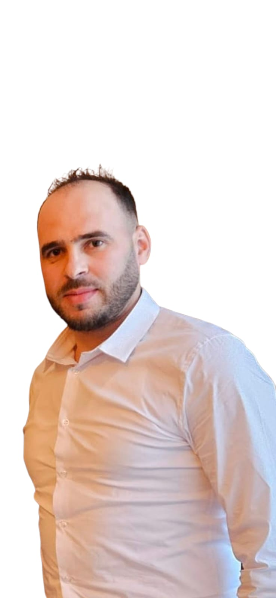

Ingénieur en mécanique des fluides et énergétique, avec expérience en modélisation et simulation CFD, analyse d'écoulements, systèmes de ventilation et phénomènes thermiques/incendie. J'exploite les données et le calcul scientifique pour optimiser les systèmes énergétiques et industriels.
Ingénieur-docteur en mécanique des fluides et énergétique (École Centrale de Lyon), je combine une expertise avancée en simulation CFD avec des compétences en analyse de données et en programmation scientifique.
Mon parcours me permet d'intervenir sur des problématiques complexes dans les domaines de la mécanique des fluides, de l'énergie, du nucléaire, de la ventilation et de désenfumage adaptées aux environnements confinés.
Aujourd'hui, j'exploite Python, SQL et Power BI pour transformer les données de systèmes énergétiques et industriels en leviers de performance concrets.
📍 Lyon, France